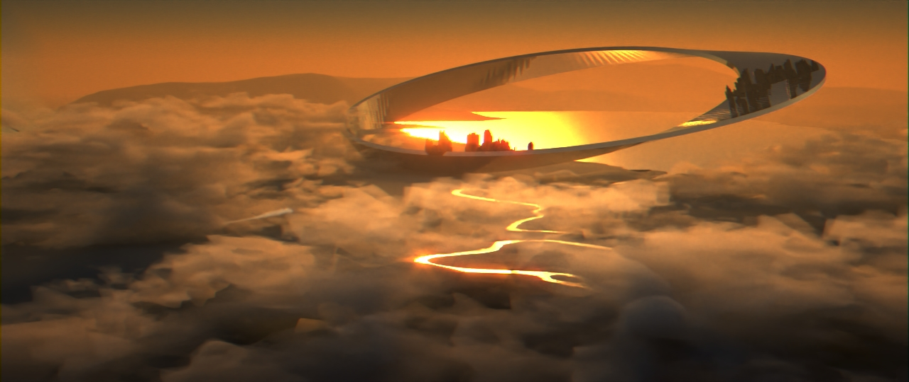

**Final Project Proposal**
Student name: Qiyuan Dong
Sciper number: 307612
Scene description and motivation
================================

- Rendering Plan
- The scene above is rendered using Blender and shows a city floating in the air. The city is built on a Mobius Ring, where people live in the city are stuck in the loop and can never walk out of the city. Many meshes and data of this scene are from eMirase's Aerial Cityscape. Later I will add more details to the city on the ring.
- The scene currently has a single light source and does not use any textures, which makes the rendering relatively easier. I will probably add a IBL light source and apply bump mapping to the water surface to add some realism.
- I suppose the main challenge will be the implementation of heterogeneous volumetric media to render the clouds.
Feature list
============
Using the table below, list the features you'll use to achieve your render, and how they are used.
* Include the point counts, they should add up to *80 points*.
* If your list of features adds up to more than 80 points, you must reduce the point count for the features of your choice until the total reaches 80 points exactly.